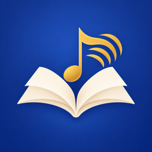

《音乐从零到作曲》是一本可以「弹」的乐理书：从「声音是什么」一路走到「写完一首歌」。全书 8 个部分、36 章，中文 / English / 中英对照三种读法；正文里的音、和弦、和弦进行、速度、拍号和简谱点一下就响。另有 29 个互动实验、13 个练耳和节奏游戏、357 道章末自测题、146 道书中练习、三组记忆卡、12 周练习计划和一个作曲工作室，能导出音频和 MIDI。所有声音都在设备上实时合成，离线可用，不用注册登录。
A music-theory book you can play: from “what is sound?” all the way to a finished song. Eight parts and 36 chapters, readable in Chinese, English or both side by side; every note, chord, progression, tempo, time signature and jianpu (numbered notation) in the text plays when you tap it. Plus 29 interactive labs, 13 ear-training and rhythm games, 357 chapter-quiz questions, the book’s 146 exercises, three flashcard decks, a 12-week practice plan and a composing studio that exports audio and MIDI. All sound is synthesized on the device. Works offline, no account needed.
完全免费：没有广告，没有内购，没有订阅。
Completely free: no ads, no in-app purchases, no subscriptions.
常见问题 FAQ
需要什么设备和系统？What do I need to run it?
iPhone 或 iPad，系统需要 iOS / iPadOS 26 或更新版本。
An iPhone or iPad running iOS / iPadOS 26 or later.
怎么切换中文 / 英文？How do I switch between Chinese and English?
书的正文：在「设置 → 阅读语言」里选中文、English 或中英对照；阅读页右上角的「Aa」菜单也能随时切。只看一种语言时，轻点一段就会在下面展开另一种语言（设置里可以关）。
界面（按钮、实验、游戏、题目）跟随系统语言：系统是中文就显示中文，其他语言显示英文。想单独改这个 App 的界面语言，打开系统「设置 → App → 音乐从零到作曲 → 语言」。
The book text: choose 中文, English or Bilingual in Settings → Reading Language, or anytime from the “Aa” menu at the top of a chapter. In single-language mode, tap a paragraph to see the other language under it (you can turn this off in Settings).
The interface (buttons, labs, games, quizzes) follows your system language: Chinese if your system is in Chinese, English otherwise. To change it for this app only, open the system Settings → Apps → Music from Zero → Language.
点了没有声音？I tap but hear nothing.
先按音量键把声音调大，再看看是不是连着蓝牙耳机或音箱。App 里「设置 → 声音」有总音量和「试听」按钮。静音开关不影响 App 的声音。
Turn the volume up with the side buttons and check for connected Bluetooth headphones or speakers. In the app, Settings → Sound has a master volume and a Preview button. The silent switch does not mute the app.
为什么要用麦克风？Why does it ask for the microphone?
只有调音器和「唱准」游戏会用麦克风，用来听你唱或弹的音高。声音只在本机实时分析，不录音、不保存、不上传。不想给权限也没关系，其他功能都能用；以后想开，到系统「设置 → 隐私与安全性 → 麦克风」里打开。
Only the tuner and the Sing in Tune game use the microphone, to hear the pitch you sing or play. The sound is analyzed live on your device and is never recorded, stored or uploaded. Everything else works without it; to turn it on later, go to Settings → Privacy & Security → Microphone.
换手机时学习记录和作品怎么带走？How do I move my progress and songs to a new device?
学习记录、笔记、自测成绩和作曲工作室里的作品只存在这台设备上。打开「设置 → 备份 → 导出学习记录和作品…」，把生成的文件存到「文件」App 或发给自己，再在新设备上用「从备份导入…」恢复。注意：导入会替换新设备上现有的记录。
Your progress, notes, quiz scores and studio songs are stored only on this device. Use Settings → Backup → Export Progress and Songs… to save a file to the Files app or send it to yourself, then Import from Backup… on the new device. Note that importing replaces the records already on that device.
工作室里写的歌能导出吗？Can I export the songs I write?
能。在作品里点「导出」：音频（M4A 或 WAV）按混音台的设置渲染；MIDI 能在 GarageBand、Logic 等软件里打开继续改。文件保存到你自己选的位置。你写的歌归你自己。
Yes. Tap Export in a song: audio (M4A or WAV) is rendered with your mixer settings, and MIDI opens in GarageBand, Logic and other apps for further editing. Files are saved where you choose. The songs you write are yours.
发现错字或内容问题？Found a typo or a mistake?
欢迎发邮件告诉我们，写上章节号（比如「第 14 章 14.2」）或附一张截图。
Please email us with the chapter and section number (for example “14.2”) or a screenshot.
联系我们 Contact
问题、建议和勘误都可以发邮件 · Questions, feedback and corrections: